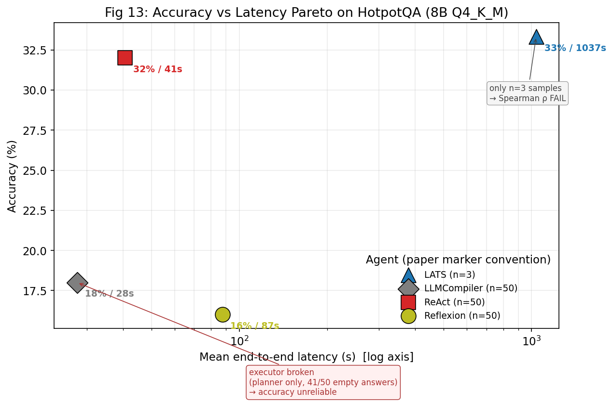
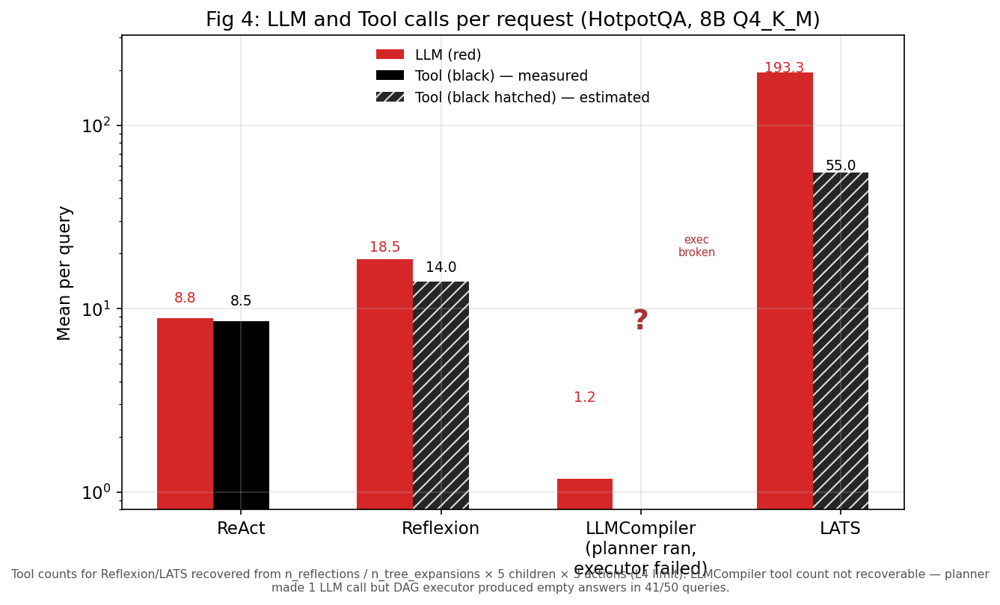
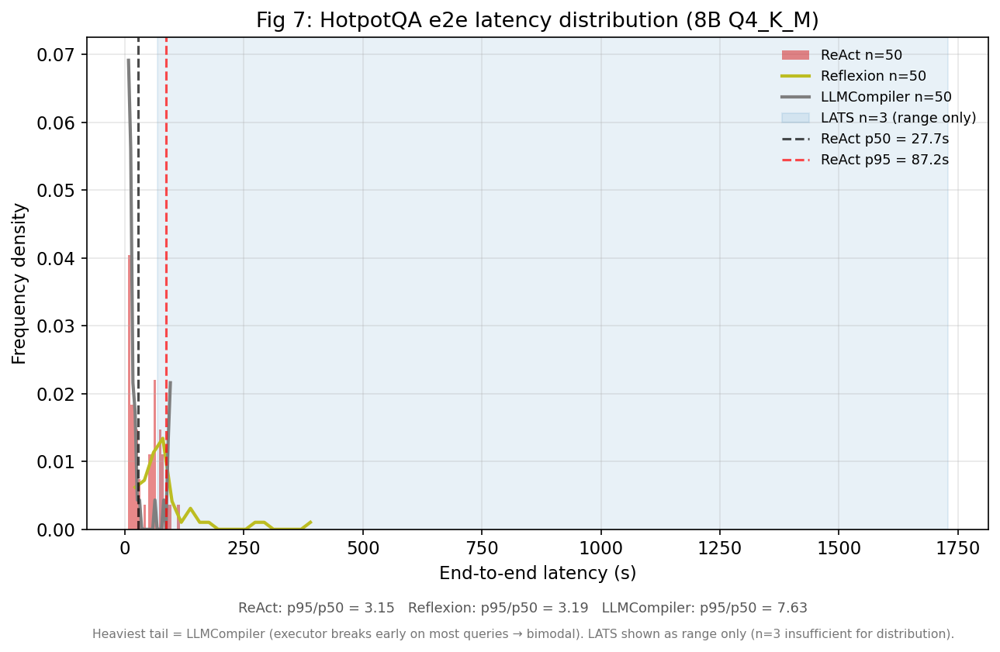

ReAct × Cohere 벡터DB로 retrieval-time fraction을 재현 가능하게 측정.
Step 4 · 다음
decode-RAG 기법 구현·측정
decode 중 retrieval prefetch/overlap 프로토타입으로 실제 지연 절감 검증.
54.98%
ReAct GPU idle (재현)
논문 54.5% 대비 Δ0.48%p — retrieval 대기가 곧 decode-RAG의 표적.
44.8% → 11.1%
decode-RAG 비율 (tool/e2e)
라이브 Wikipedia → Cohere 벡터DB. 재현 가능한 baseline 확보.
36.0%
EM 정확도 (벡터DB)
기존 라이브 Wikipedia ReAct 32.0%보다 +4%p. F1로는 44.7% vs 38.5%(+6.2%p).
415 ms
검색당 시간 (벡터DB)
Cohere API + FAISS 880K. 라이브 Wikipedia ~2,004ms의 1/5.
PART 1논문 — 배경과 동기
왜 "에이전트의 인프라 비용"을 측정하는가, 그리고 그것이 decode-RAG와 어떻게 연결되는가.
The Cost of Dynamic Reasoning: Demystifying AI Agents and Test-Time Scaling from an AI Infrastructure Perspective
(Kim et al., KAIST, arXiv 2506.04301v2, HPCA-2026)는
AI 에이전트(plan → tool → observe → refine를 반복하는 LLM 시스템)의 인프라 비용을 처음으로 정량 측정한 시스템 측정 연구다.
핵심 질문: "한 번에 답하는 정적 LLM 대비, 동적 추론 에이전트는 인프라 측면에서 얼마나 더 비싸고, 그만큼 정확도가 오르는가?"
왜 이 논문이 decode-RAG의 출발점인가
논문이 측정한 "GPU idle 54.5%"의 정체는 에이전트가 외부 도구(retrieval) 응답을 기다리며 GPU가 노는 시간이다.
즉 단일 요청 안에서 LLM↔도구의 순차 의존성 때문에 생기는 이 idle 구간이 바로
decode 중 retrieval를 미리 당겨와(prefetch/overlap) 숨길 수 있는 비효율이다.
본 연구의 측정 지표 retrieval-time fraction = tool_total / e2e 은 "그 idle를 얼마나 숨길 수 있는가"의 상한을 정량화한다.
PART 2기존 재현 완료
절대 수치(초·Wh)는 환경 격차로 비교 불가 → 비율·분포·순위·트레이드오프 형상의 재현을 목표로 함. "패턴 수준에서 일치하는가?"
논문 (KAIST · GCP)
GPU: NVIDIA A100 40GB ×1(8B) / ×8(70B)
Backend: vLLM 0.6.6 · FP16 · prefix cache on
벤치마크: HotpotQA·WebShop·MATH·HumanEval
우리 (M3 Pro · 로컬)
GPU: Apple M3 Pro 18-core (Metal, 36GB)
Backend: llama.cpp · Q4_K_M GGUF · cache off(기본)
벤치마크: HotpotQA만 (decode-RAG에 가장 적합)
재현한 핵심 Figure (논문 vs 우리)
📄 논문 — Fig 13 Accuracy vs Latency Pareto

📊 우리 — HotpotQA × 4 agent × 8B Q4
LATS 가장 정확+가장 비쌈, LLMCompiler 가장 빠름 — 논문 형상 재현. (LATS 표본 3개 한계로 Spearman은 미달.)
📄 논문 — Fig 4 요청당 LLM·Tool 호출

📊 우리 — LATS LLM 호출 폭증 재현
📄 논문 — Fig 7 단대단 지연 분포 (heavy tail)

📊 우리 — p95/p50 = 3.34 (heavy tail 재현)
가장 강력한 검증 포인트 — Fig 6 GPU idle
📄 논문 — NVIDIA DCGM 직접 측정
54.98%
우리 측정 (wall-clock proxy) · 논문값 54.5%
|Δ| = 0.48%p 일치
측정 방식이 다른데도(DCGM vs wall-clock) 0.5%p 안에서 일치 — 우연이 아닌 구조적 패턴. 이 idle가 곧 decode-RAG의 표적.
재현 검증 요약
Figure
검증 기준
실측
결과
Fig 4
LATS/ReAct LLM 호출 비 ≥ 5.0
21.87
✅ PASS
Fig 5
구성 비율 합 ≤ 100%
OK
✅ PASS
Fig 6
ReAct GPU idle ≈ 54.5%
54.98%
✅ PASS (Δ0.48%p)
Fig 7
p95/p50 ≥ 2.0
3.34
✅ PASS
Fig 13
LATS/ReAct acc ≥ 0.9 & latency↑
1.04 & 1037s>41s
⚠️ PARTIAL
Fig 13
Spearman ρ(lat,acc) ≥ 0.6
0.40 (LATS n=3)
❌ FAIL
Fig 8
HotpotQA tool tokens ≥ 10%
0%
❌ FAIL (handler 한계)
전체 발표 덱(31슬라이드)은 presentation.html 참고. → 패턴 수준 재현 성공: GPU idle·LLM 호출 폭증·tool wait 지배·heavy tail·LATS 수확체감이 모두 같은 형상으로 나타남.
PART 3현재 실험 — ReAct × Cohere 벡터DB 완료
decode-RAG의 정량 baseline을 위해, 기존 라이브 Wikipedia 검색을 고정·재현 가능한 Cohere 밀집 벡터DB로 교체하고
retrieval-time fraction을 측정.
동기 — 왜 벡터DB baseline인가
기존 라이브 Wikipedia의 한계
비재현성: 라이브 API는 콘텐츠가 시간에 따라 드리프트 (논문 2026-01 ↔ 우리 측정 사이 변동).
네트워크 변동: 검색당 ~2s가 순수 네트워크 지연에 좌우 → 분리 측정 어려움.
Cohere 벡터DB가 주는 것
고정 코퍼스: Cohere Wikipedia-2023-11 스냅샷 → 재현 가능.
밀집 검색: 의미 기반 top-k. 키워드 검색보다 정확도↑.
측정 가능한 비율: 검색이 표준 BaseTool.invoke 경로 → tool span 자동 캡처.
코퍼스 스케일 확장 — 풀 코퍼스(IVF-PQ)·로컬 dense 대조로 retrieval fraction의 상·하한을 더 넓게 bracket.
일반화 — 70B/FP16 또는 다른 모델·다른 워크로드(WebShop 등)로 패턴 확인.
한 줄 요약
논문의 핵심 메시지(동적 추론의 인프라 비용, 특히 retrieval 대기로 인한 GPU idle)를 로컬에서 재현했고,
그 비효율을 재현 가능한 숫자(decode-RAG 비율 ~11% 하한 ↔ ~45% 상한)로 고정했다.
다음은 이 slack을 실제로 회수하는 decode-RAG 기법의 구현·측정.